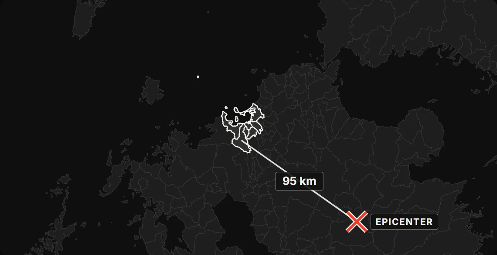
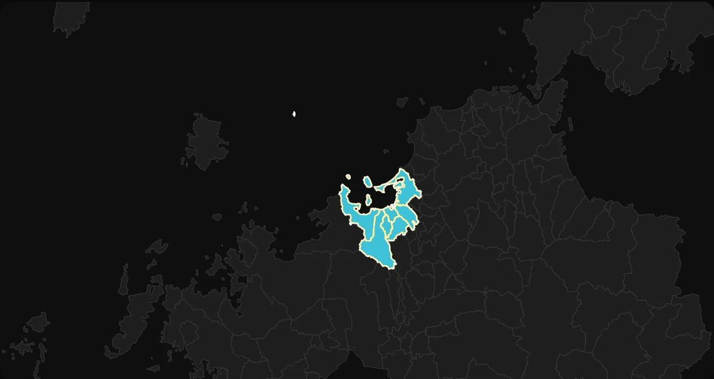

これは予報ではありませんThis is not a forecast
アプリが表示するもの、しないもの。気象庁の数値を中継するだけで、独自の予測はしない理由。What the app shows, and what it never does. Why it only relays JMA's numbers and never makes its own prediction.


Windows用 · 無料 · 登録不要。必要なときだけ、お知らせします。Free for Windows. No sign-up. Quiet until it matters.
Shindo Screenerは、気象庁が発表したあなたの場所の震度を、そのまま表示します。予測も、計算も、推測もしません。Shindo Screener shows the Shindo JMA reports for your place, as JMA published it. It does not forecast, calculate or guess.
ノートNotes
まだ公開された記事はありません。最初に書く予定の6本です。公開したらここに並びます。Nothing is published yet. These are the first six planned. They will appear here as they go live.
アプリが表示するもの、しないもの。気象庁の数値を中継するだけで、独自の予測はしない理由。What the app shows, and what it never does. Why it only relays JMA's numbers and never makes its own prediction.
震度1から7まで。気象庁の解説表をもとに、やさしい言葉で。Shindo 1 to 7, in plain words, based on JMA's explanation table.
気象庁から、配信サービスを通って、あなたの画面まで。遅れや欠測が起きる場所も。From JMA, through the relay services, to your screen. Including where delays and gaps can happen.
11月26日、陸奥湾でM3.6。おいらせ町は震度1未満でした。実際の記録を、出典つきで。Nov 26, M3.6 in Mutsu Bay. Oirase read below Shindo 1. The real record, with sources.
岩手と東北の日々の微小地震。ふだんの回数を基準に、「多い日」を判断できるように。Daily small quakes around Iwate and Tohoku, with a baseline, so a busy day can be judged against a normal one.
確定情報のあとに、何を確認するか。公式の情報源へのリンクつき。What to check once the final report is in, with links to the official sources.
更新は X (@ShindoScreener) でお知らせします。Updates go out on X (@ShindoScreener).
仕組みHow it works
揺れの前に。あなたの場所の予想震度と、震源までの距離。Before the shaking. The Shindo JMA expects at your place, and how far the epicenter is.
数分後、あなたの地域の震度。確定情報が出るまでの間も、状況を表示します。A few minutes later, the level for your area. It keeps you informed until the final report.
観測された震度と、津波の有無。ほかで最も強かった震度も。The measured Shindo, whether a tsunami is expected, and the strongest elsewhere.
使い方Setup
市区町村を入力。英語、ローマ字、漢字、かなに対応。Type a city in English, romaji, kanji or kana.

「すべて」から「大きな揺れだけ」まで、4つ。Four profiles, from every level to only the big ones.

予備のモニターに。条件に合う震度が出るまで静かです。On a spare monitor. It stays quiet until a reading matches.

表示する情報はすべて気象庁が発表したものです。第三者の配信を通じて届くため、遅れたり届かなかったりすることがあります。気象庁のサイト、テレビ、ラジオもあわせてご確認ください。スマートフォンの緊急速報は必ずオンのままにしてください。Everything shown is information JMA published. It reaches the app through third-party feeds, so it can arrive late or not at all. Please also check the JMA website, TV or radio, and keep your phone's emergency alerts on.
気象庁とは関係のない非公式のアプリです。出典: 気象庁ホームページ。An unofficial app, not made or endorsed by JMA. Source: JMA website.